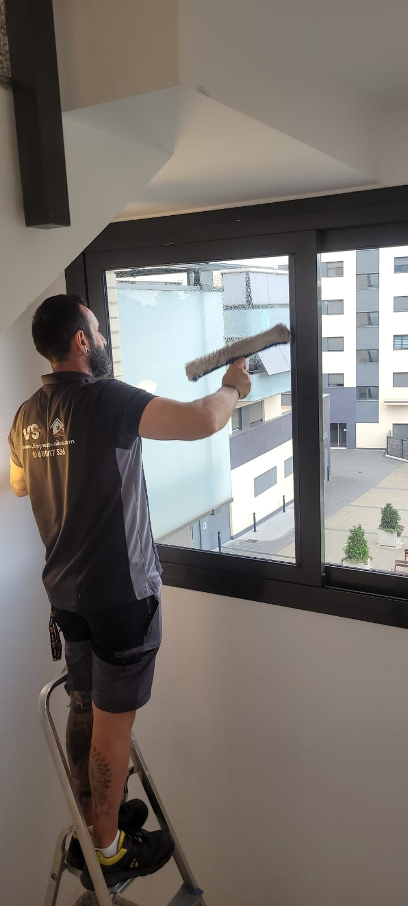

Espacios compartidos
Limpieza de zonas comunes en comunidades de Sabadell
Mantenimiento integral de todos los espacios compartidos en comunidades del Vallès Occidental: jardines, piscinas, salones y gimnasios.

Zonas comunes
Mantenimiento de zonas comunes en comunidades del Vallès Occidental
Más allá del portal y las escaleras, las comunidades de vecinos en Sabadell cuentan con múltiples zonas comunes que requieren atención especializada. Nos ocupamos de cada espacio compartido —jardines, piscinas, salones sociales, gimnasios y trasteros— para que todos los vecinos puedan disfrutarlos en perfectas condiciones.
Trabajamos con comunidades en Sabadell, Terrassa, Barberà del Vallès y toda la comarca del Vallès Occidental. Cada tipo de espacio tiene sus propias necesidades de limpieza y frecuencia, y adaptamos nuestro plan de mantenimiento a la realidad de cada comunidad.
El mantenimiento regular de zonas comunes no solo mejora la convivencia sino que también protege el valor del inmueble. Contacta con nosotros en el 680 917 536 para evaluar las necesidades de tu comunidad sin compromiso.
- Jardines y zonas verdes comunitarias
- Terrazas y zonas de barbacoa
- Salas de reuniones y locales sociales
- Piscinas comunitarias y vestuarios
- Gimnasios y salas de fitness
- Trasteros comunitarios y cuartos de instalaciones
- Zonas infantiles y de juegos
- Cuartos de contadores y zonas técnicas
Espacios especializados
Cada zona, un tratamiento específico
Piscinas y vestuarios
Limpieza y desinfección con productos homologados para espacios acuáticos. Control de algas, cal y gérmenes en toda la zona de baño.
Jardines y exteriores
Barrido de hojas, limpieza de caminos y mobiliario exterior. Mantenimiento de zonas verdes para que siempre estén presentables.
Salones sociales y gimnasios
Limpieza a fondo de paredes, suelos y equipamiento. Desinfección de superficies de contacto y ventilación de espacios cerrados.
Plan de mantenimiento anual
Diseñamos un calendario de limpiezas adaptado a cada espacio: frecuencias semanales para zonas de alta rotación y estacionales para exteriores.